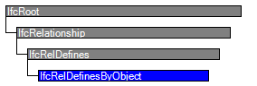

Natural language names
 | Definiert durch Objekte - Relation |
 | Rel Defines By Object |
 | Définition par objet |
| Definiert durch Objekte - Relation |
| Rel Defines By Object |
| Définition par objet |
| Item | SPF | XML | Change | Description | IFC2x3 to IFC4 |
|---|---|---|---|---|
| IfcRelDefinesByObject | ADDED |
The objectified relationship IfcRelDefinesByObject defines the relationship between an object taking part in an object type decomposition and an object occurrences taking part in an occurrence decomposition of that type.
The IfcRelDefinesByObject is a 1-to-N relationship, as it allows for the assignment of one declaring object information to a single or to many reflected objects. Those objects then share the same object property sets and, for subtypes of IfcProduct, the eventually assigned representation maps.
Only objects that take part in a type decomposition and in an occurrence decomposition of the same type can be connected by the IfcRelDefinesByObject relationship. The IfcRelDefinesByObject links the decomposed object type part, also called the "declaring part" with the occurrence of that part inside the occurrence of the decomposed type, also called the "reflected part", as shown in Figure 123.
 |
Figure 123 — Part definition relationships |
The IfcRelDefinesByObject can be used together with the shape representations of the product type as shown in Figure 124. The IfcShapeRepresentation of the "declaring part" is referenced by the "reflected part". The IfcObjectPlacement of the model occurrence (the whole) determines the position within the project context.
 |
Figure 124 — Part definition relationships with shape representation |
HISTORY New entity in IFC4.
| # | Attribute | Type | Cardinality | Description | C |
|---|---|---|---|---|---|
| 5 | RelatedObjects | IfcObject | S[1:?] | Objects being part of an object occurrence decomposition, acting as the "reflecting parts" in the relationship. | X |
| 6 | RelatingObject | IfcObject | [1:1] | Object being part of an object type decomposition, acting as the "declaring part" in the relationship. | X |

| # | Attribute | Type | Cardinality | Description | C |
|---|---|---|---|---|---|
| IfcRoot | |||||
| 1 | GlobalId | IfcGloballyUniqueId | [1:1] | Assignment of a globally unique identifier within the entire software world. | X |
| 2 | OwnerHistory | IfcOwnerHistory | [0:1] |
Assignment of the information about the current ownership of that object, including owning actor, application, local identification and information captured about the recent changes of the object,
NOTE only the last modification in stored - either as addition, deletion or modification. | X |
| 3 | Name | IfcLabel | [0:1] | Optional name for use by the participating software systems or users. For some subtypes of IfcRoot the insertion of the Name attribute may be required. This would be enforced by a where rule. | X |
| 4 | Description | IfcText | [0:1] | Optional description, provided for exchanging informative comments. | X |
| IfcRelationship | |||||
| IfcRelDefines | |||||
| IfcRelDefinesByObject | |||||
| 5 | RelatedObjects | IfcObject | S[1:?] | Objects being part of an object occurrence decomposition, acting as the "reflecting parts" in the relationship. | X |
| 6 | RelatingObject | IfcObject | [1:1] | Object being part of an object type decomposition, acting as the "declaring part" in the relationship. | X |
| # | Concept | Model View |
|---|---|---|
| IfcRoot | ||
| Software Identity | Common Use Definitions | |
| Revision Control | Common Use Definitions | |
<xs:element name="IfcRelDefinesByObject" type="ifc:IfcRelDefinesByObject" substitutionGroup="ifc:IfcRelDefines" nillable="true"/>
<xs:complexType name="IfcRelDefinesByObject">
<xs:complexContent>
<xs:extension base="ifc:IfcRelDefines">
<xs:sequence>
<xs:element name="RelatedObjects">
<xs:complexType>
<xs:sequence>
<xs:element ref="ifc:IfcObject" maxOccurs="unbounded"/>
</xs:sequence>
<xs:attribute ref="ifc:itemType" fixed="ifc:IfcObject"/>
<xs:attribute ref="ifc:cType" fixed="set"/>
<xs:attribute ref="ifc:arraySize" use="optional"/>
</xs:complexType>
</xs:element>
<xs:element name="RelatingObject" type="ifc:IfcObject" nillable="true"/>
</xs:sequence>
</xs:extension>
</xs:complexContent>
</xs:complexType>
ENTITY IfcRelDefinesByObject
SUBTYPE OF (IfcRelDefines);
RelatedObjects : SET [1:?] OF IfcObject;
RelatingObject : IfcObject;
END_ENTITY;
 EXPRESS-G diagram
EXPRESS-G diagram Link to this page
Link to this page